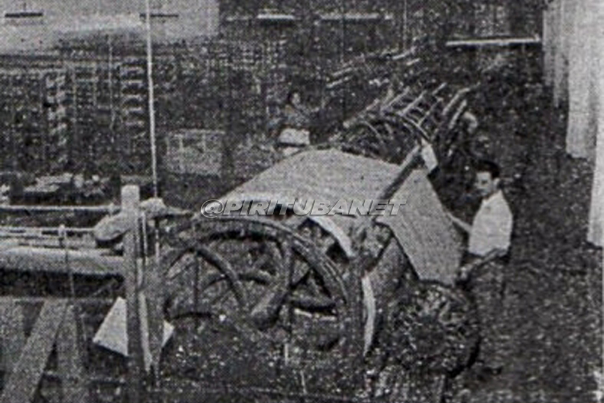

|
História | Lazer | Educação | Saúde e Segurança | Shopping Tietê Plaza |
|
|
História | Lazer | Educação | Saúde e Segurança | Shopping Tietê Plaza |
O nome Pirituba vem da junção de “piri” (vegetação de brejo na língua tupi), com “tuba” (“muito” na língua tupi), já que era uma região repleta de matas de brejo. A região já é populada desde o século XIX, no qual três grandes fazendas dominavam a área, sendo elas: Fazenda Barreto, Fazenda do Brigadeiro Tobias e Fazenda Jaraguá. Os donos dessas propiedades exerciam grande influência política, com isso, eles conseguiram, em 1885, a contrução de uma estação de trem para receber os carregamentos que iam para o porto de Santos (atualmente conhecida por linha 7 Rubi). [1]

A partir dessa linha de trem, Pirituba foi se desenvolvendo e graças as fazendas cafeeiras presentes na região, se tornou um grande produtor de café. Em 1922, Pirituba começou a receber um número maior de moradores, em grande parte imigrantes europeus. Pelo crescimento da indústria cafeeira em São Paulo, as zonas produtoras de café se concentraram na Av. Paulista, com isso as fazendas foram divididas entres os novos residentes do bairro (os europeus), e deram vida à Vila Pereira Barreto, região central da povoação de Pirituba. [2]
Após essa divisão, o bairro conseguiu se desprender das atividades de café e começou a trabalhar em outros 3 empreendimentos que se tornaram atividades econômicas importantes, que hoje representam a identidade histórica do bairro: o Lanifício Pirituba (Fábrica de Tecidos), o Sanatório Pinel (Hospital Psiquiátrico) e a Capela São Luiz de Gonzaga. Com a chegada da energia elétrica ao bairro, estabelecida pela Fábrica de Tecidos, que ligou a rede elétrica do Piqueri à região em 1927, diversas indústrias começaram a se estabelecer no local, principalmente aquelas de imigrantes europeus. [3]
